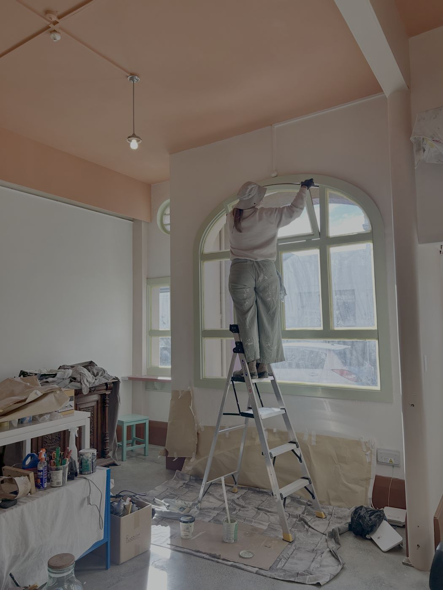
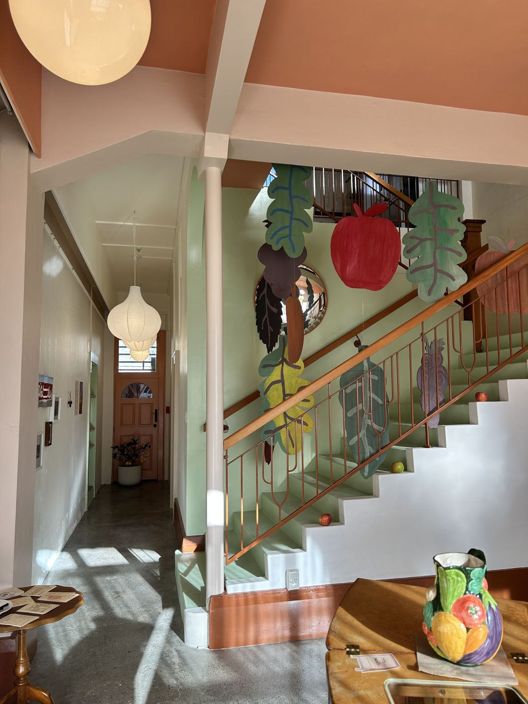
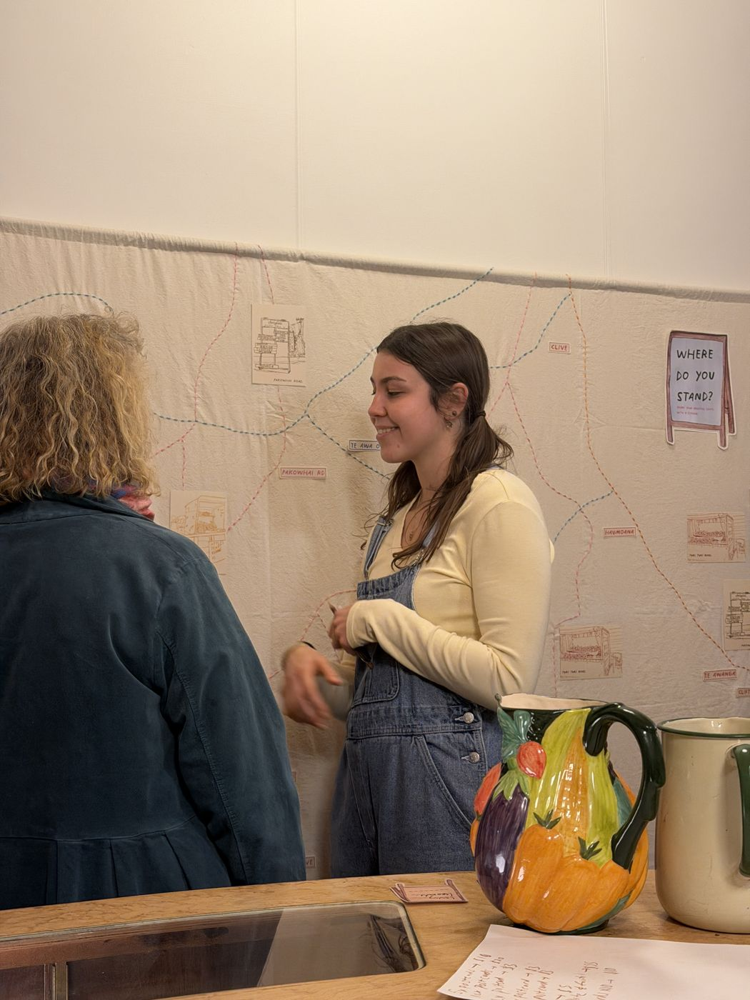
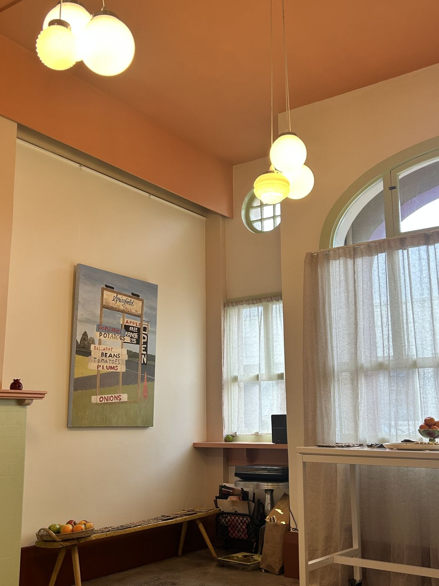
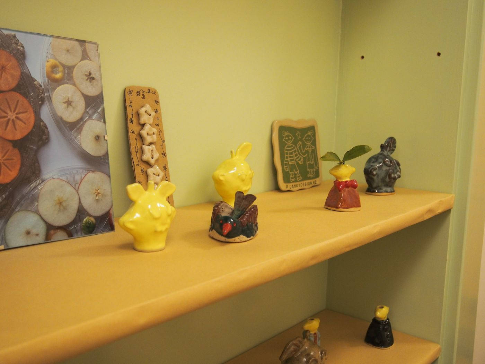
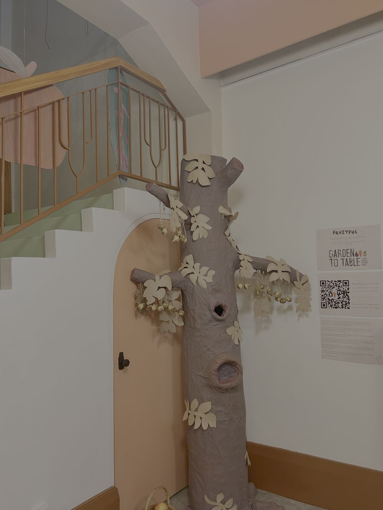
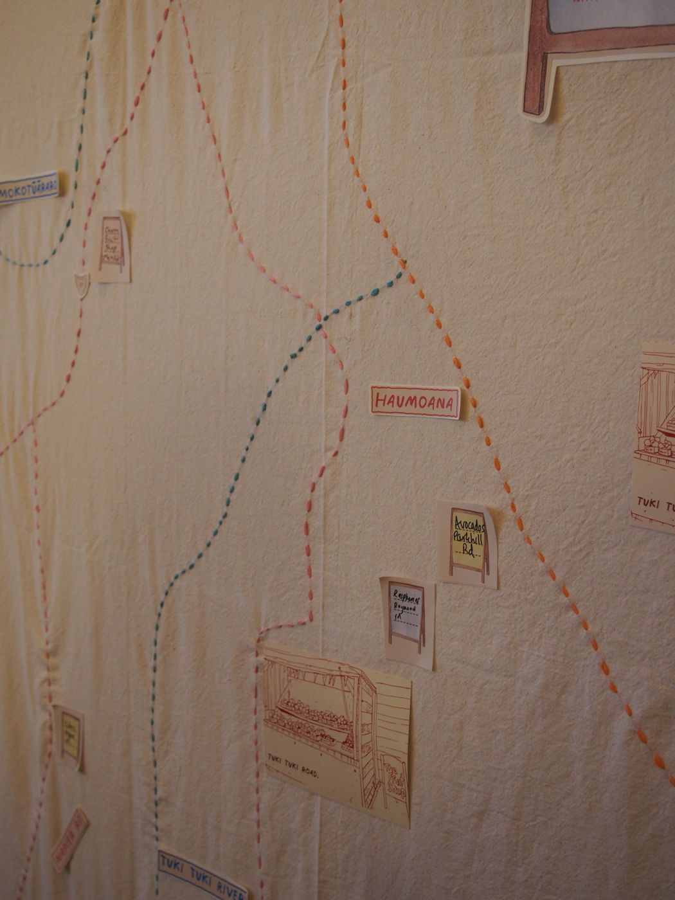
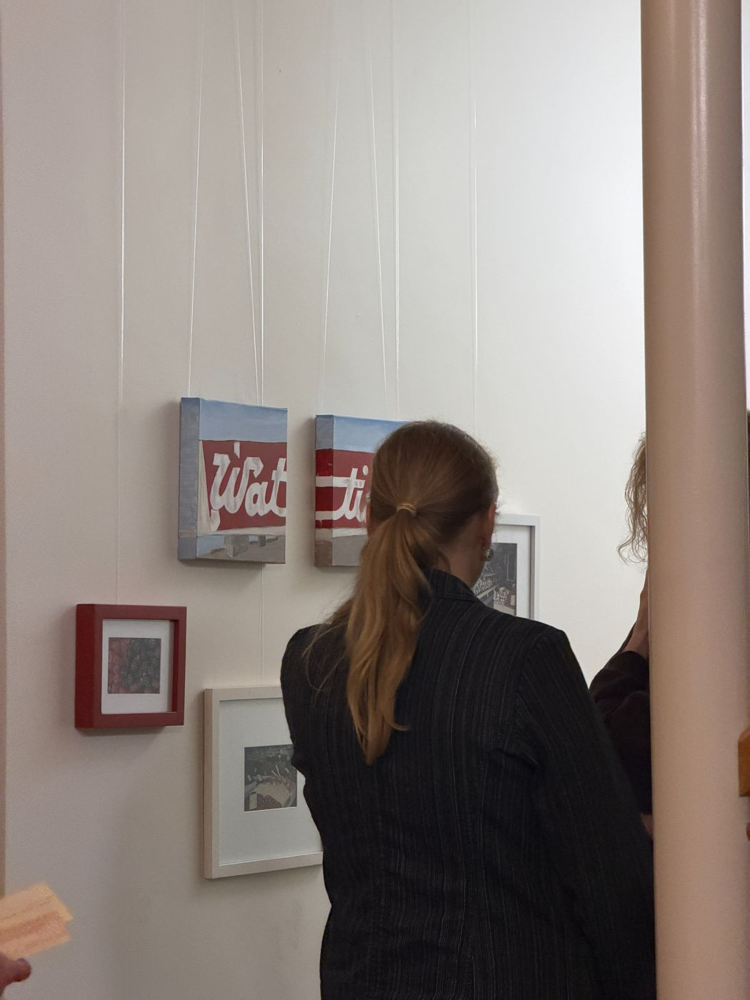
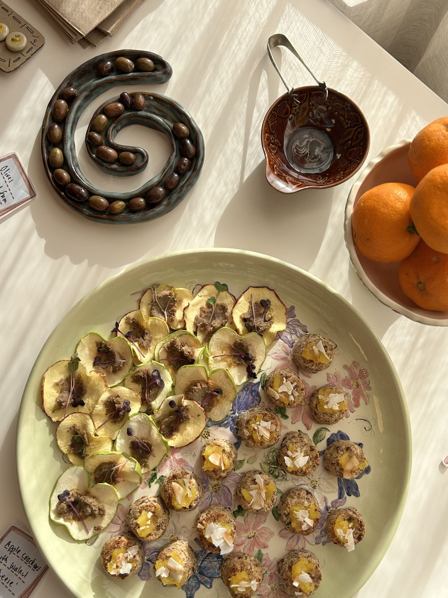

Fruitful.
Why
As two fruit loving gals Fruitful was an inevitable creation but the closure of some of the Watties lines and local fruit stores replaced with chicken shops kickstarted us.
We wanted to create a world of appreciation for our place and the fruit that grows within it.
What
Whilst searching for a place to share our story we realised the answer was already in our clutches. We knew of an Art Deco building calling to be shared with the world.

So we started Garnett Gallery.
We then spent months refurbishing an Art Deco icon to create a place to tell our story.


Feedback.
We were surprised by many of the visitors that came eager to talk about fruit. It was comforting to know we weren't the only ones with an obsession.
The exhibit brought together people willing to fly the flag of Te Matau-a-Māui as a the Fruit bowl of Aotearoa. It held a place for important conversations about the future of our region.

Future Goals.
This event pushes us towards creating community activations. We now have a Canvas to tell important stories through art, food, and most importantly conversations. We are eager to create more worlds of important conversations because from small things big things grow.
July 2026.

Lanky Ceramics.
Jodi created buttons & ceramics that serve as reminders of the brightness that fruit brings to our worlds. She also translated her work into watercolour showcasing her love for a variety of mediums.

The Tree!
A cardboard tree adorned with golden walnuts for visitors to pick when popping a koha into the tree for Garden to Table. Visitors walked away with a fruitful message and we lent a hand to an organisation growing our next generation of gardeners.

Where do you stand?
An interactive map to celebrate roadside stalls. Highlighting five stalls through sketches & stories the map also included stickers for visitors to pop on their favourite produce spots. Ending the exhibit with an archive of growth in our region.

WAT TIES?
We also featured Esta's mother, Shelley's work of painting which tells stories and ask's questions of 'Wat Ties?'

Fruitful Food.
Esta created food to fuel happy visitors. The food was all created from locally sourced ingredients which sat alongside a map, serving as another reminder of the great things that grow here.